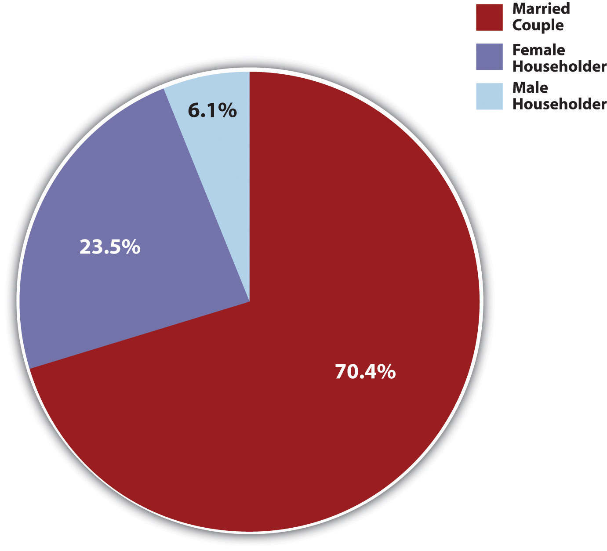
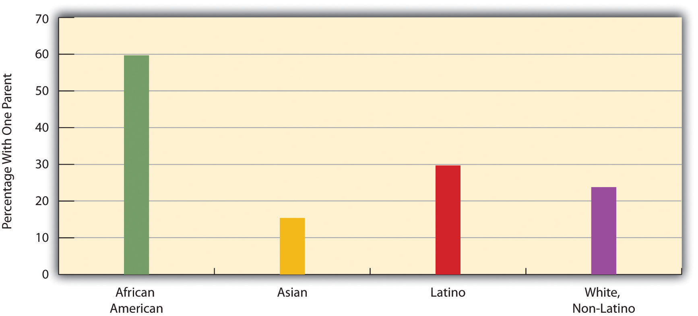

It is time now to take a closer look at families in the United States today. Using U.S. census data (U.S. Census Bureau, 2010),U.S. Census Bureau. (2010). Statistical abstract of the United States: 2010. Washington, DC: U.S. Government Printing Office. Retrieved from http://www.census.gov/compendia/statab we first sketch the major types of family arrangements that now exist.
The census defines a household as being all the people who live together in a dwelling unit, whether or not they are related by blood, marriage, or adoption. About 117 million households exist in the United States. Of this number, about 67% are family households and 33% are nonfamily households. Most of the nonfamily households consist of only one person. About half of all households involve a married couple, and half do not involve a married couple.
This last figure should not suggest that marriage is unimportant. Only 26% of all adults (18 or older) have never been married, about 57% are currently married, 10% are divorced, and 6% are widowed (see Figure 15.2 "Marital Status of the U.S. Population, 2008, Persons 18 Years of Age or Older"). Because more than half of the never-married people are under 30, it is fair to say that many of them will be getting married sometime in the future. When we look just at people aged 45–54, about 88% are currently married or had been married at some point in their lives. These figures all indicate that marriage remains an important ideal in American life, even if not all marriages succeed.
Figure 15.2 Marital Status of the U.S. Population, 2008, Persons 18 Years of Age or Older

Source: Data from U.S. Census Bureau. (2010). Statistical abstract of the United States: 2010. Washington, DC: U.S. Government Printing Office. Retrieved from http://www.census.gov/compendia/statab.
Most marriages (96.1%) are intraracial, or between people of the same race, with only 3.9% of marriages between people of different races. As small as it is, this figure is 3 times greater than the 1.3% of marriages in 1980 that were interracial. Moreover, almost 15% of new marriages in 2008 were interracial. This increase (Chen, 2010)Chen, S. (2010, June 4). Interracial marriages at an all-time high, study says. CNN. Retrieved from http://articles.cnn.com/2010-06-04/living/pew.interracial.marriage_1_ interracial-marriages-millennial-generation-race-and-ethnicity-matter?_s=PM:LIVING is reflected in dating patterns, as more than half of African American, Latino, and Asian adults have dated someone from a different racial/ethnic group (Qian, 2005).Qian, Z. (2005). Breaking the last taboo: Interracial marriage in America. Contexts, 4(4), 33–37. More than half of married Asians and Native Americans are in an interracial marriage, compared to about 40% of Latinos, 10% of African Americans, and 4% of whites. These percentages heavily reflect the numbers of people in these groups, because mathematically it is easiest to end up in an interracial relationship and marriage if there are relatively few people in one’s own racial/ethnic group. Because there are so many whites compared to the other groups, more than 90% of all interracial marriages have a white spouse.
It is interesting to see how the age at which people first get married has changed. Figure 15.3 "Median Age at First Marriage for Men and Women, 1890–2009" shows that age at first marriage declined gradually during the first half of the 20th century, before dropping more sharply between 1940 and 1950 because of World War II. It then rose after 1970 and today stands at almost 28 years for men and 26 years for women.
Figure 15.3 Median Age at First Marriage for Men and Women, 1890–2009

Source: Data from U.S. Census Bureau. (2010). Estimated median age at first marriage, by sex: 1890 to the present. Retrieved from http://www.census.gov/population/socdemo/hh-fam/ms2.xls.
In many ways, the United States differs from other Western democracies in its view of marriage and in its behavior involving marriage and other intimate relationships (Cherlin, 2010; Hull, Meier, & Ortyl, 2010).Cherlin, A. J. (2010). The marriage-go-round: The state of marriage and the family in America today. New York, NY: Vintage; Hull, K. E., Meier, A., & Ortyl, T. (2010). The changing landscape of love and marriage. Contexts, 9(2), 32–37. First, Americans place more emphasis than their Western counterparts on the ideal of romantic love as a basis for marriage and other intimate relationships and on the cultural importance of marriage. Second, the United States has higher rates of marriage than other Western nations. Third, the United States also has higher rates of divorce than other Western nations; for example, 42% of American marriages end in divorce after 15 years, compared to only 8% in Italy and Spain. Fourth, Americans are much more likely than other Western citizens to remarry once they are divorced, to cohabit in short-term relationships, and, in general, to move from one intimate relationship to another, a practice called serial monogamy. This practice leads to instability that can have negative impacts on any children that may be involved and also on the adults involved.
The U.S. emphasis on romantic love helps account for its high rates of marriage, divorce, and serial monogamy. It leads people to want to be in an intimate relationship, marital or cohabiting. Then, when couples get married because they are in love, many quickly find that passionate romantic love can quickly fade; because their expectations of romantic love were so high, they become more disenchanted once this happens and unhappy in their marriage. The American emphasis on independence and individualism also makes divorce more likely than in other nations; if a marriage is not good for us, we do what is best for us as individuals and end the marriage. As Andrew J. Cherlin (2010, p. 4)Cherlin, A. J. (2010). The marriage-go-round: The state of marriage and the family in America today. New York, NY: Vintage. observes, “Americans are conflicted about lifelong marriage: they value the stability and security of marriage, but they tend to believe that individuals who are unhappy with their marriages should be allowed to end them.” Still, the ideal of romantic love persists even after divorce, leading to remarriage and/or other intimate relationships.
The United States has about 36 million families with children under 18. About 70% of these are married-couple families, while 30% (up from about 14% in the 1950s) are one-parent families. Most of these latter families are headed by the mother (see Figure 15.4 "Family Households With Children Under 18 Years of Age, 2008").
Figure 15.4 Family Households With Children Under 18 Years of Age, 2008
Source: Data from U.S. Census Bureau. (2010). Statistical abstract of the United States: 2010. Washington, DC: U.S. Government Printing Office. Retrieved from http://www.census.gov/compendia/statab.
The proportion of families with children under 18 that have only one parent varies significantly by race and ethnicity: Latino and African American families are more likely than white and Asian American households to have only one parent (see Figure 15.5 "Race, Ethnicity, and Percentage of Family Groups With Only One Parent, 2008"). Similarly, whereas 30% of all children do not live with both their biological parents, this figure, too, varies by race and ethnicity: 22% for non-Latino white children, compared to 15% of Asian children, 30% of Latino children, and 62.5% of African American children.
Figure 15.5 Race, Ethnicity, and Percentage of Family Groups With Only One Parent, 2008
Source: Data from U.S. Census Bureau. (2010). Statistical abstract of the United States: 2010. Washington, DC: U.S. Government Printing Office. Retrieved from http://www.census.gov/compendia/statab.
We discuss single-parent families and racial and ethnic differences in family arrangements at greater length a little later, and we will also discuss several other issues affecting children. But before we leave the topic of children, it is worth noting that children, despite all the joy and fulfillment they so often bring to parents, also tend to reduce parents’ emotional well-being. As a recent review summarized the evidence, “Parents in the United States experience depression and emotional distress more often than their childless adult counterparts. Parents of young children report far more depression, emotional distress and other negative emotions than non-parents, and parents of grown children have no better well-being than adults who never had children” (Simon, 2008, p. 41).Simon, R. W. (2008). The joys of parenthood, reconsidered. Contexts, 7(2), 40–45.
Children have these effects because raising them can be both stressful and expensive. Depending on household income, the average child costs parents between $134,000 and $270,000 from birth until age 18. College education obviously can cost tens of thousands of dollars beyond that. Robin W. Simon (2008)Simon, R. W. (2008). The joys of parenthood, reconsidered. Contexts, 7(2), 40–45. argues that American parents’ stress would be reduced if the government provided better and more affordable day care and after-school options, flexible work schedules, and tax credits for various parenting costs. She also thinks that the expectations Americans have of the joy of parenthood are unrealistically positive and that parental stress would be reduced if expectations became more realistic.